jVLT – nástroj pro učení se slovíček
Slovíčka
Seznam slov
V seznamu slov se zpočátku zobrazují všechna slova vašeho slovníčku. Způsoby, jak hledat určitá hesla, jsou dva. První možností je zadat řetězec do textového pole „Filtr“ a následně stisknout „Enter“. Pak se v seznamu zobrazí ta slova, která obsahují filtrovací řetězec, a ta, u nichž ho obsahuje výslovnost nebo význam. Chcete-li mít seznam znovu úplný, řetězec v textovém poli filtru vymažte a znovu stiskněte „Enter“.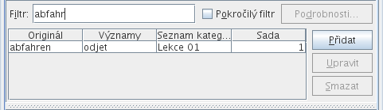
Druhou možností je aktivovat políčko „Pokročilý filtr“ a poté definovat filtr v dialogu, který se objeví po stisknutí tlačítka s nápisem „Podrobnosti...“.
Filtry se skládají z jednoho nebo mnoha subfiltrů; každý je představován řádkou, která obsahuje tři sloupce. V prvním sloupci vybíráte vlastnost (Originál, Výslovnost atd.), v druhém sloupci typ porovnávání, např. „se rovná“, „je větší než“ nebo „je menší než“. Do posledního sloupce se zadává hodnota. Tou je textový řetězec, číslo, datum nebo seznam textových řetězců, což závisí na vybrané vlastnosti a typu porovnávání. Subfiltry můžete přidávat a mazat stisknutím tlačítka „Více“, resp. „Méně“ a celý filtr resetujete kliknutím na tlačítko „Reset“. Výběrem z možností „Vyhovět všem následujícím“ a „Vyhovět jednomu z následujících“ určujete, zda se musí vyhovět všem subfiltrům, nebo jen jednomu z nich.
Filtr lze uložit zadáním názvu do textového pole v horní části dialogu a následným vybráním tlačítka „Nový/Aktualizovat“. Uložený filtr se nahraje jeho vybráním v rozbalovací nabídce. Pro jeho aktivaci musíte kliknout na tlačítko „Použít“. Chcete-li změnit existující filtr, nahrajte a upravte ho a pak stiskněte tlačítko „Nový/Aktualizovat“. Filtry lze mazat použitím tlačítka „Smazat“.
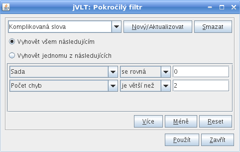
Vybírání sloupců a řazení
Pokud se klikne pravým tlačítkem na záhlaví jednoho ze sloupců seznamu slov, objeví se vyskakovací nabídka, která umožňuje seřadit seznam slov podle vybraného sloupce.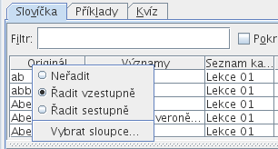
Vyskakovací nabídka také obsahuje položku „Vybrat sloupce...“, která uživateli dovoluje vybrat sloupce pro seznam slov. Sloupce lze vybírat a odebírat tím, že nejdříve vyberete název sloupce a poté smáčknete tlačítko s levou šipkou, resp. tlačítko s pravou šipkou. Pořadí názvů sloupců lze měnit tlačítky se šipkou nahoru a se šipkou dolů. Sloupec, jehož název je v seznamu nejvíce nahoře, se v seznamu slov zobrazí nejvíce vlevo.
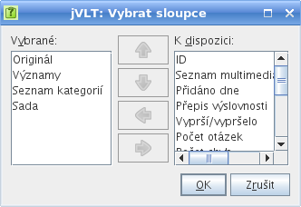
Stisknutím tlačítek „Přidat“, „Upravit“ nebo „Smazat“ vedle seznamu slov můžete vkládat, měnit resp. mazat slova.
Detailní náhled
V detailním náhledu se zobrazuje slovo, které je právě vybrané v seznamu slov, spolu s jeho výslovností, překladem a příklady. V záložce vzhledu v dialogu nastavení můžete určit, kolik detailů se bude zobrazovat. Je-li vybrán příklad, je význam sdružený s dotyčným příkladem zvýrazněn. Dvojitým kliknutím na konkrétním příkladu se dostanete do záložky příkladů.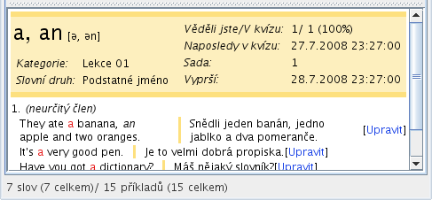
Chcete-li ke slovu přidat více informací, můžete uvést zvukové nebo obrazové soubory, což je popsáno v dalším oddíle. V detailním náhledu se soubory zobrazují jako ikony. Kliknutí na ikonu zvukového souboru způsobí přehrání příslušného souboru, po kliknutí na ikonu obrazového souboru se otevře nové okno, ve kterém se obrázek zobrazí.
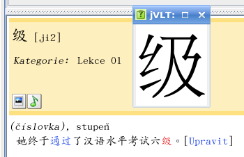
Přidávání slov
Kliknutím na tlačítko „Přidat“ vedle seznamu slov můžete do svého slovníčku přidat slovo. V dialogu, který se otevře, můžete vidět dvě textová pole: „Originál“ a „Výslovnost“. Prvně jmenované textové pole je povinné, druhé je volitelné. Má-li slovo, které budete vkládat, více možných výslovností, stiskněte tlačítko „Více...“.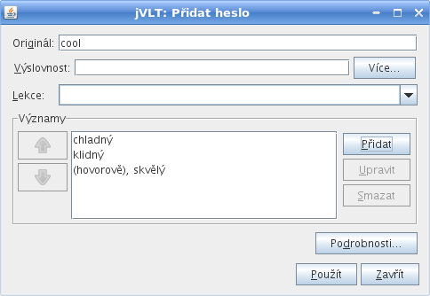
Slovo musí mít nejméně jeden význam. Významy můžete přidávat stisknutím tlačítka „Přidat význam“ vedle náhledu na jejich seznam a zadáním řetězců do textového pole „Překlad“ nebo do textového pole „Definice“. Definice slova je krátká poznámka o jeho typu, použití atd. Nemusíte vepisovat text do obou polí, stačí do jednoho. Má-li slovo více než jeden význam, můžete jejich pořadí měnit, a to pomocí tlačítek s šipkami na levé straně náhledu na seznam.
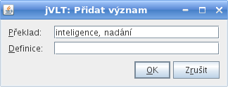
Poté, co jste s úpravami slova skončili, stiskněte „Použít“, a slovo se přidá. Dialog se pak nezavře – i nadále můžete přidávat slova, nebo se stisknutím tlačítka „Zavřít“ můžete vrátit do hlavního okna.
Pokročilá nastavení
Po stisknutí tlačítka „Podrobnosti...“ můžete upravovat několik dodatečných vlastností slova.

Detaily slova
Zda se v dialogu, který se objeví, zobrazí záložka „Detaily“, je závislé na tom, zda máte pro slovník nastaven jazyk, což se dělá přes položku „Úpravy->Vlastnosti“. V záložce detailů můžete vybrat slovní druh, např. podstatné jméno, sloveso atd. U některých slovních druhů může být možné zadávat dodatečné detaily. Například, na obrázku výše lze nastavit rod podstatného jména.Kategorie
Slovo může být (volitelně) zařazeno do kategorií (např. „Rodinní příslušníci“). Můžete buď vybrat existující kategorie z rozbalovacího seznamu, nebo zadat nový název kategorie. Poté stiskněte „Přidat“.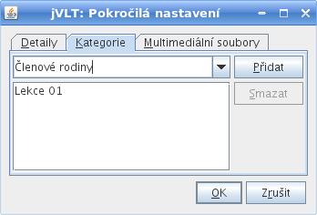
Multimediální soubory
Ke slovu můžete zadávat i zvukové a obrazové soubory, například soubor WAV, v němž bude výslovnost. (Ne)zaškrtnutím políčka „Použít relativní cestu“ je možné zvolit, zda se umístění souboru má ukládat s relativní cestou (např. „images\obrazek.gif“), nebo s absolutní cestou (např. „D:\jvlt\images\obrazek.gif“). Zvolíte-li první možnost, bude cesta relativní k umístění vašeho souboru se slovíčky. Pokud je například vaším souborem se slovíčky „D:\jvlt\nemcina.jvlt“ a umístění souboru je „images\obrazek.gif“, pak bude jVLT hledat obrázek "D:\jvlt\images\obrazek.gif".Neumí-li jVLT přehrát nebo zobrazit soubory určitého typu, můžete v dialogu nastavení zadat externí příkazy.
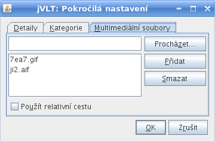
Upravování slov
Slovo můžete začít upravovat tím, že ho nejdříve vyberete v seznamu slov a pak stisknete tlačítko „Upravit“ vedle seznamu. Upravování jednoho slova je v zásadě stejné jako přidávání slova. Je tu však jeden rozdíl: Když chcete smazat význam, musíte se ujistit, že se na tento význam neodkazuje žádný příklad.Pokud vyberete před stiskem tlačítka „Upravit“ více slov – buď použitím klávesy Ctrl nebo Shift při klikání na slova –, můžete pro všechna vybraná slova najednou změnit lekci a pokročilá nastavení. Musíte však být opatrní: Nová nastavení vždy přepíší stará. Když například upravujete dvě slova najednou, jedno patřící do lekce „A“, druhé do lekce „B“, a přiřadíte k nim novou lekci „C“, pak už tato slova nebudou do lekce „A“, resp. „B“ patřit.
Mazání slov
Chcete-li smazat slova, musíte je nejdříve vybrat v seznamu slov (více slov lze vybrat při stisknutí klávesy Ctrl nebo klávesy Shift). Po stisknutí tlačítka „Smazat“ vedle seznamu slov se objeví dialog, jehož prostřednictvím budete požádáni, abyste své rozhodnutí potvrdili. Vezměte na vědomí, že všechny odkazy na mazaná slova budou z příkladů smazány. Budou smazány i příklady, ve kterých nezbudou žádné odkazy. V dialogu se zobrazí počet příkladů, které budou smazány a které budou upraveny.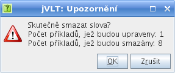
Chcete-li vidět seznam příkladů odkazujících se na konkrétní slovo, můžete se podívat na jeho detailní náhled.